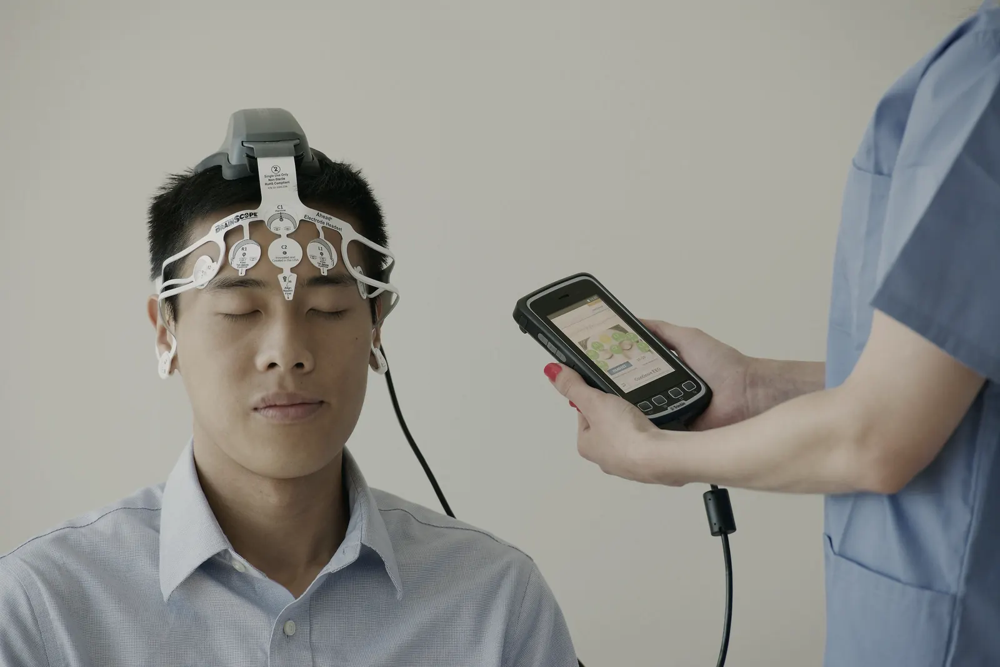
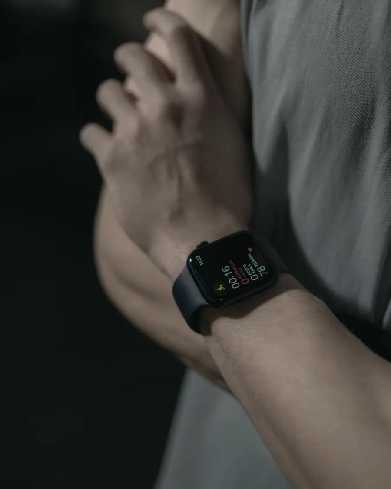

Fifty million people live with epilepsy.
A study in recognising seizures from the brain’s own electrical signal, with models small enough to be worn. Neural Networks final project, University of Colorado Boulder, Fall 2026.
Nearly four in five of them live in low- and middle-income countries.
World Health Organization, 2024
In low-income countries, about three quarters do not receive the treatment they need.
World Health Organization, 2024
Yet up to seventy percent could live seizure-free if properly diagnosed and treated.
World Health Organization, 2024
Land from Natural Earth. The lit points are illustrative and do not mark recorded cases.
Scroll to begin
A seizure is a brief storm of electrical activity in the brain. It can last a few seconds or several minutes. It can arrive without warning, while someone is driving, swimming, cooking or asleep. For many families, the hardest part is not the seizure itself. It is never knowing when the next one will come.
The signal
The brain keeps a record of every storm.
Every thought, movement and feeling depends on brain cells passing tiny electrical signals to one another. A seizure begins when a group of those cells starts to fire too strongly and all at once. What a person goes through depends on where in the brain this starts and how far it spreads. For one person it is a few seconds of blank staring, with no memory of it afterwards. For another it is a jerk of one arm, a strange taste, or a sudden change in mood. For others it becomes a full convulsion, with a fall, stiffening and shaking, and a loss of consciousness. Doctors read these events from the electroencephalogram, a set of small sensors resting on the scalp that trace the brain’s electrical rhythm as wavering lines. Calm activity looks like low, uneven ripples. A seizure looks different: the lines grow tall, sharp and strangely regular, as if many brain cells had begun to fire in step.
A trained specialist can spot that change by eye, but only if they are looking at the right moment. Seizures can come less than once a year or several times a day, and most of any recording shows nothing unusual at all. To catch one, a hospital may keep a patient connected to the sensors for hours or days while staff watch the screens. That kind of watching is slow, tiring and expensive, and it needs the equipment and the expert in the same place. Some seizures happen at night, when the person is asleep and nobody sees them. Afterwards the person often cannot say what happened, so doctors depend on what others remember. A careful record of when seizures happen helps a doctor judge whether a treatment is working. Often that record is a diary written from memory, and it has gaps.

Living with it
The seizure is only part of it.
A seizure may last only minutes, but its effects reach far into the rest of a person’s life. Falls during seizures lead to bruises and broken bones, and a seizure near water or a stove can be deadly. People with epilepsy also live with higher rates of anxiety and depression. Many of the heaviest burdens are not medical at all. In many parts of the world, people with epilepsy and their families face stigma and discrimination, often rooted in old myths that the condition is contagious, incurable or a sign of bad behaviour. Children can lose access to education, and adults can be refused a driving licence, certain jobs, or insurance. In some countries, laws still allow a marriage to be annulled because one partner has epilepsy. The World Health Organization notes that this stigma is often harder to overcome than the seizures themselves. Epilepsy is not contagious, and it has been written about for six thousand years, yet the misunderstandings remain.
The hopeful part is that epilepsy is often very treatable. With the right medicines, up to seven in ten people could stop having seizures altogether. Most people can be diagnosed and treated at a local clinic, without sophisticated equipment. After two years without a seizure, some can even talk with their doctor about stopping their medicine. Yet in low-income countries, about three quarters of people with epilepsy do not get the treatment they need. One recent study found that basic seizure medicines were available, on average, in fewer than half of public health facilities in poorer countries. The risk of dying early is highest in rural areas and in low- and middle-income countries, where help is furthest away. Many of those deaths, from falls, drowning, burns and seizures that do not stop, could be prevented.
Who it reaches
- 5 millionpeople are diagnosed with epilepsy each year, across every age, country and income.WHO
- Up to 3×higher risk of early death than the general population, with the highest rates in rural areas and poorer countries.WHO
- 1 in 10people worldwide may have a single seizure in their lifetime. Epilepsy means two or more without a clear trigger.WHO

Could the warning be small enough to wear?
Hospitals can watch a patient around the clock, but most people with epilepsy live far from a hospital bed, and many live far from any specialist at all. Many seizures end on their own, but the minutes around them are when people get hurt. A fall on a staircase, a seizure in the bath, or one that will not stop are the moments when quick help matters. Often nobody nearby knows a seizure is happening, especially at night or when the person lives alone. A device that recognised a seizure as it began, and quietly told someone nearby, could close that gap. It could also keep an honest record of every seizure, including the ones nobody saw. That record would help a doctor judge whether a medicine is working. Such help would matter most in exactly the places where specialists and hospital beds are scarce.
Such a device has to be cheap, run for days on a small battery, and work without a connection to a distant computer. It has to be comfortable enough that someone will actually wear it, and simple enough that a family can trust it. It should raise the alarm when a seizure happens, but not so often by mistake that people learn to ignore it. Those demands pull against each other, because a specialist’s skill does not fit easily into something so modest. This project asks how much of that skill can be packed into a very small program that listens to the brain’s signal. It also asks what is lost along the way, and who might be left out.
Here is how we went about it, in plain terms. We began with recordings from a children’s hospital, where young patients had worn scalp sensors for days and doctors had marked every seizure. We cut those recordings into slices a few seconds long and showed them to a computer program, together with the doctors’ answers, so it could learn what a seizure looks like. Then came the fair test: one child was kept aside completely, and the program had to find that child’s seizures without ever having seen them before. We repeated this for every child, fourteen times in all. Next we made the job harder on purpose, giving the program fewer sensors, down to just two, and squeezing it into far less space so it could fit on a tiny device. At each step we counted how many seizures it still caught and how often it raised a false alarm. We also compared a small program with one about 190 times bigger, to see whether size really matters. The pages that follow show the data, the methods and the results, including where it fails.